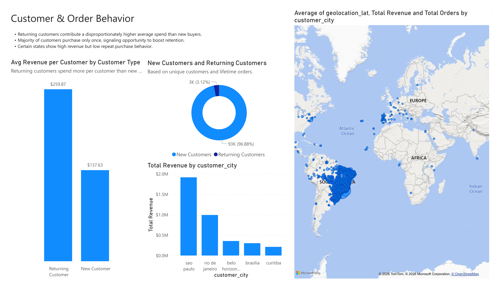
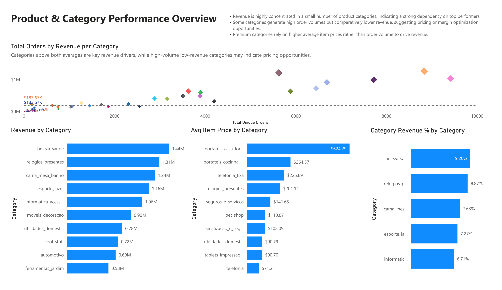
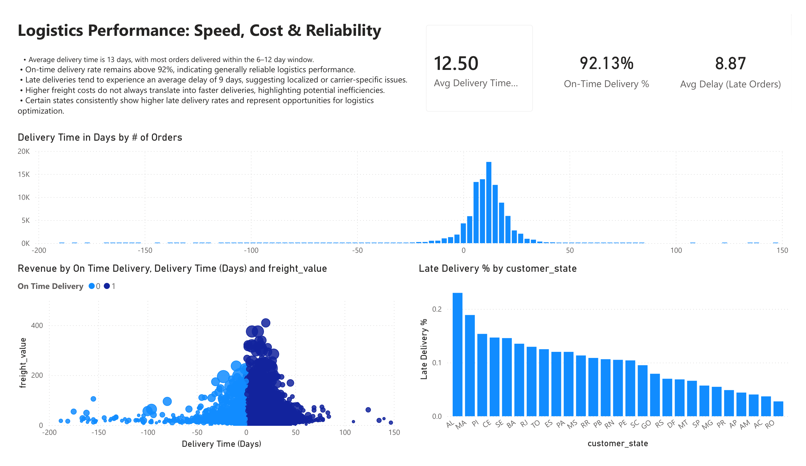

Olist E-commerce Strategy & Operations Analysis
Data-driven insights to optimize logistics and customer lifetime value.
1. Executive Overview

- Sales Seasonality: Sharp performance peaks between May and August, followed by a decline in September.
Why it matters: Revenue relies on volume fluctuations rather than price adjustments.
Business impact: High exposure to seasonal volatility; requires a more balanced revenue stream throughout the year.
2. Customer & Order Behavior

- Retention Gap: Recurring customers represent a small fraction of the base but have a significantly higher average spend.
Why it matters: Acquisition costs are likely high compared to the untapped value of existing customers.
Business impact: Increasing the retention rate by even 5% could disproportionately scale total revenue without increasing marketing spend.
3. Product Performance Overview

- Category Concentration: A few "Hero" categories drive the majority of revenue, while high-volume items often show thin margins.
Why it matters: Over-reliance on a few products creates a single point of failure.
Business impact: Need for pricing optimization in high-volume/low-margin categories to improve overall profitability.
4. Delivery & Logistics

- Logistics Risk: Late deliveries cluster around higher freight values and specific regions.
Why it matters: Shipping costs increase without improving delivery speed.
Business impact: Margin erosion and lower customer satisfaction in high-value orders.
Strategic Recommendations
Customer Strategy
Pilot loyalty programs focused on the top 20% of recurring customers by revenue to maximize LTV.
Operational Efficiency
Perform a deep-dive into regional logistics partners where freight costs are high but delivery times are sub-optimal.
Tools & Skills Applied
- Power BI: Data modeling, DAX measures, custom KPIs
- Analysis: Exploratory & Diagnostic Analysis
- Operations: Business & Operations Analytics
- Data Storytelling: Executive-level reporting